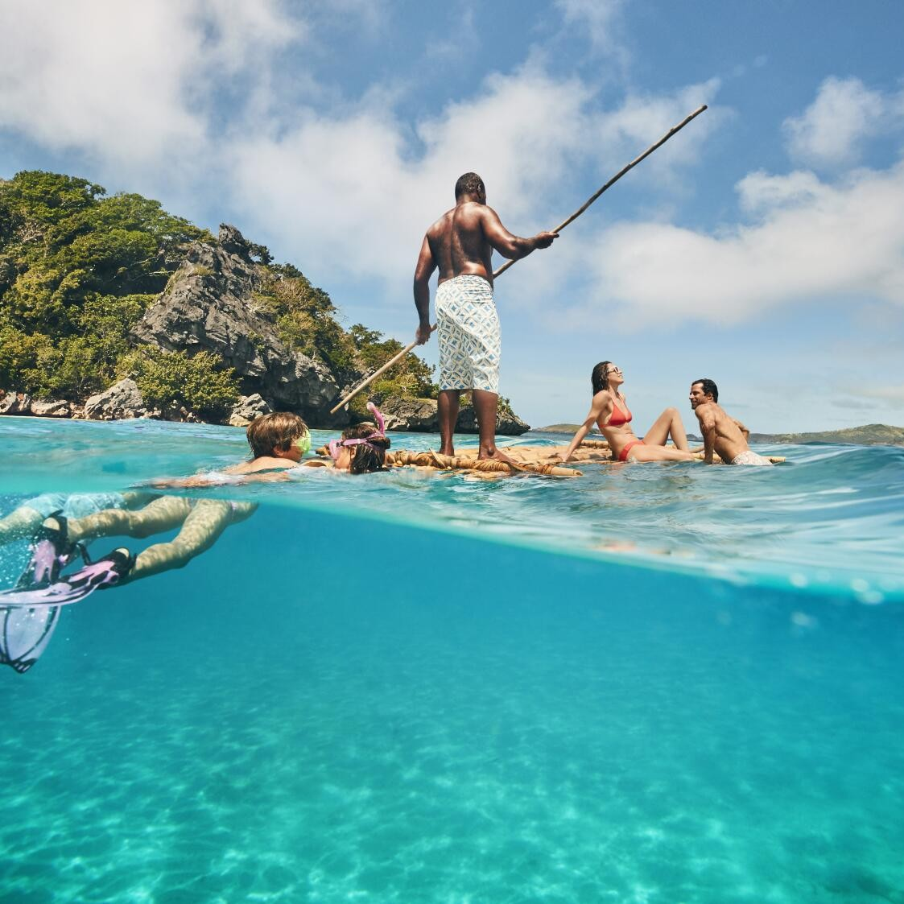
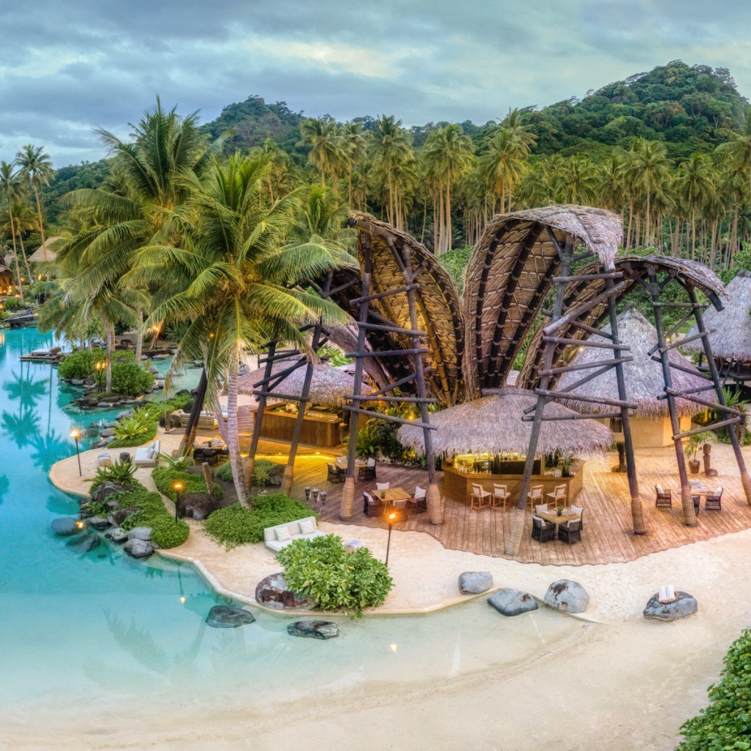

.jpg)
Fiji
From Suva's Cultural Tapestry to the Pristine Waters of Yasawa Islands
My Fijian odyssey began in Suva, the capital city, where I was greeted with a warm "Bula!" by the friendly locals. Suva's vibrant markets and bustling streets provided a taste of Fijian life. The multicultural tapestry of the city was evident in its diverse cuisine, colorful festivals, and lively music.
 My journey took me to the Coral Coast, a pristine stretch of coastline adorned with coral reefs. Donning snorkeling gear, I submerged into the crystal-clear waters of Sigatoka Sand Dunes National Park. The underwater world revealed a kaleidoscope of colors as I swam among vibrant corals, darting fish, and graceful sea turtles. Exploring these reefs was like entering a living aquarium, a testament to Fiji's extraordinary marine biodiversity.
In Nadi, I ventured to the Garden of the Sleeping Giant, a botanical paradise nestled in the Sabeto Valley. Strolling through the lush gardens, I marveled at the exotic orchids and vibrant tropical plants. The serenity of this place provided a stark contrast to the lively streets of Nadi, offering a tranquil escape into nature.
My journey continued to the Yasawa Islands, a chain of remote islands surrounded by turquoise waters. Sailing aboard a traditional Fijian outrigger canoe, I explored the pristine beaches and hidden coves. Each island had its own unique charm, from the rugged landscapes of Waya Island to the dramatic limestone cliffs of Naviti Island. Island hopping allowed me to witness the untouched beauty of these remote paradises.
 Heading east to Taveuni, known as the "Garden Island," I embarked on a waterfall adventure. Taveuni boasts some of Fiji's most magnificent waterfalls, including the iconic Tavoro Falls. Hiking through lush rainforests, I reached these cascading wonders, where I could cool off in the crystal-clear pools beneath the falls. The sights and sounds of nature were a symphony for the senses. Beneath the waves, Rainbow Reef beckoned with its vibrant coral gardens and a kaleidoscope of marine life. Diving into these pristine waters, I encountered soft corals in brilliant hues and swam alongside schools of fish. The vibrant marine ecosystem was a testament to Fiji's commitment to conservation.
Venturing to Vanua Levu, Fiji's second-largest island, I delved into the heart of Fijian culture. Visiting a local village, I participated in a traditional kava ceremony, where the earthy drink was shared in a spirit of camaraderie. Dancing alongside the villagers to the beat of Fijian drums, I felt a deep connection to the warmth and hospitality of the Fijian people.
My journey concluded in the Mamanuca Islands, a haven for relaxation and romance. I boarded a sunset cruise, where the fiery hues of the setting sun painted the sky in shades of orange and pink. The tranquil waters, the gentle breeze, and the company of fellow travelers created a serene atmosphere. On private beaches, I indulged in beachfront picnics and savored fresh seafood delicacies. The feeling of the soft, warm sand beneath my feet and the sound of the lapping waves were the epitome of island paradise.
As I reflect on my journey through Fiji, I am enchanted by the country's natural beauty, warm hospitality, and vibrant culture. From the bustling streets of Suva to the underwater wonderland of the Coral Coast, from the tranquil gardens of Nadi to the remote islands of Yasawa, Taveuni's waterfalls, Vanua Levu's cultural embrace, and the Mamanuca Islands' romantic seclusion, Fiji is a Polynesian paradise that continues to captivate and inspire.
Join me in my future travels as I continue to explore the captivating regions of Asia and Oceania, each offering its own unique blend of beauty and cultural richness. Until next time, keep your wanderlust alive and your heart open to the wonders of the world. Vinaka vakalevu!